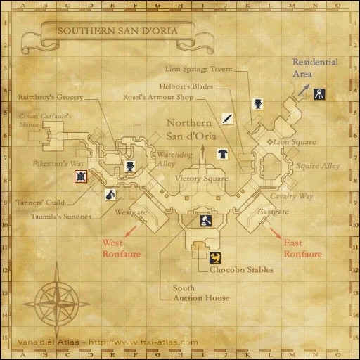
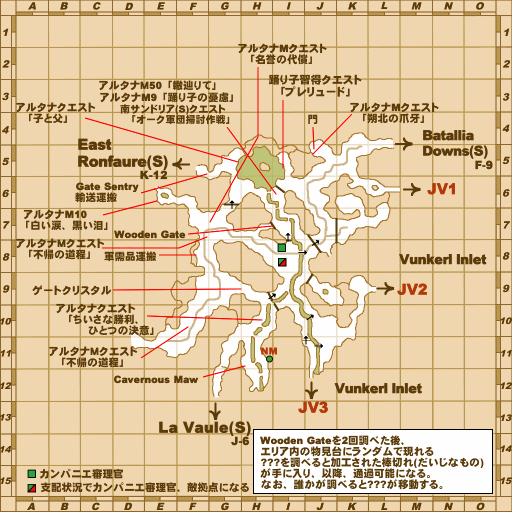
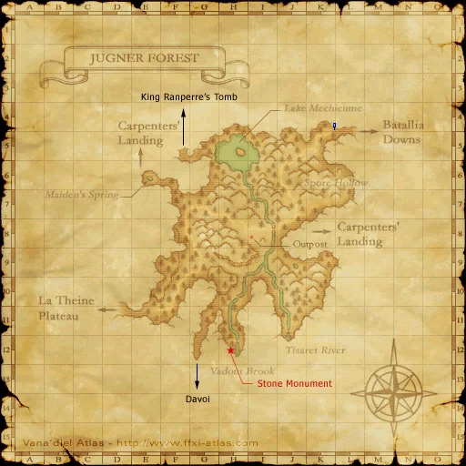

Before you begin
- Complete Dancers in Distress.
- During this mission, obtain one Cernunnos Bulb for Amaura's request.
Starting point
Amaura · Southern San d'Oria · G-6
Walkthrough
- Speak with Amaura (G-6). Obtain a Cernunnos Bulb from Wandering Saplings in Jugner Forest [S] and trade it to her; this first trade shows the bulb without consuming it.
- Trade the bulb to Humus-rich Earth at Maiden's Spring, Jugner Forest [S] (E-6), to plant it.
- Visit the corresponding Humus-rich Earth in present-day Jugner Forest (E-6). Examine it for a scene, then again to spawn Cernunnos.
- Defeat Cernunnos and examine the earth again before leaving to obtain Cernunnos resin.
- Report to Amaura. Wait until the next Vana'diel day, leave the zone and return, then speak with her for the tonic. Talking too early requires another zone change.
Completion and reward
Bottle of treant tonic.
Area maps
Open a zone below, then select a map to enlarge it. Match the named floors and grid coordinates in the steps; these are reference area maps, not a live position tracker.
Southern San d'Oria



Jugner Forest (S)


Jugner Forest



Zone guides
References
Steps are an original summary of the linked walkthrough and reviewed source. Other servers’ bonus rewards are not included. How to read requirements, waits and battlefield notes.